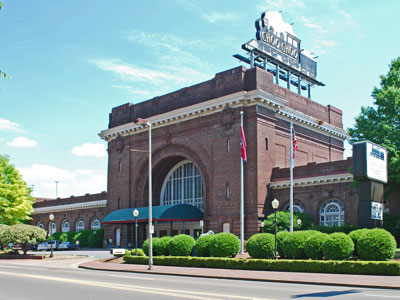
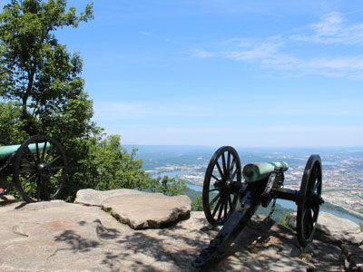
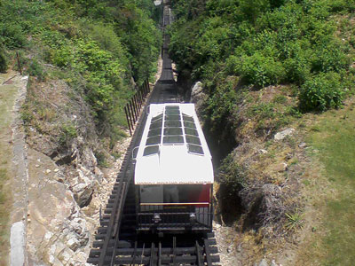
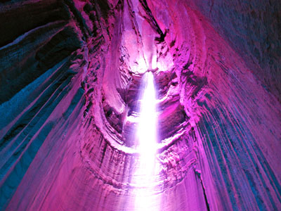
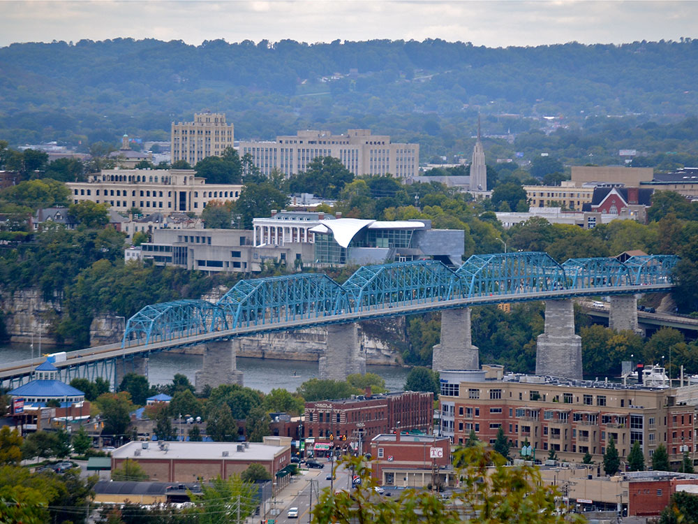
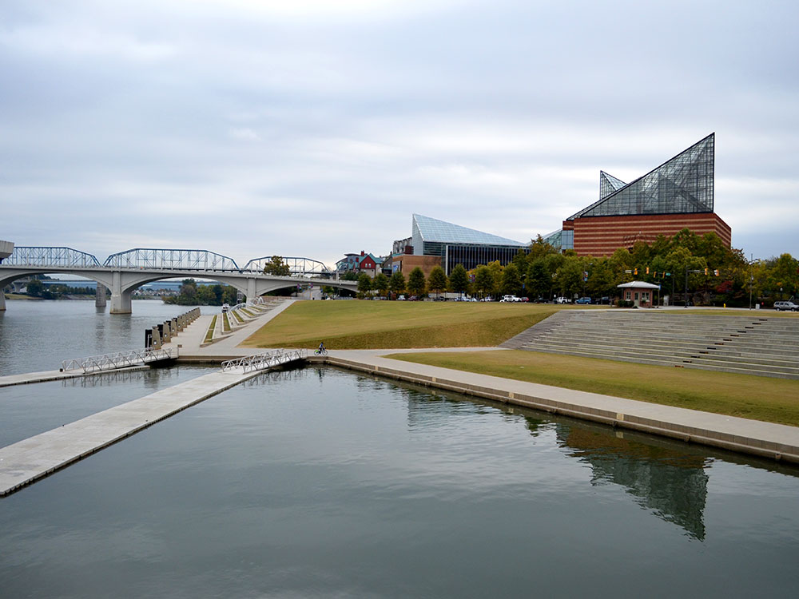
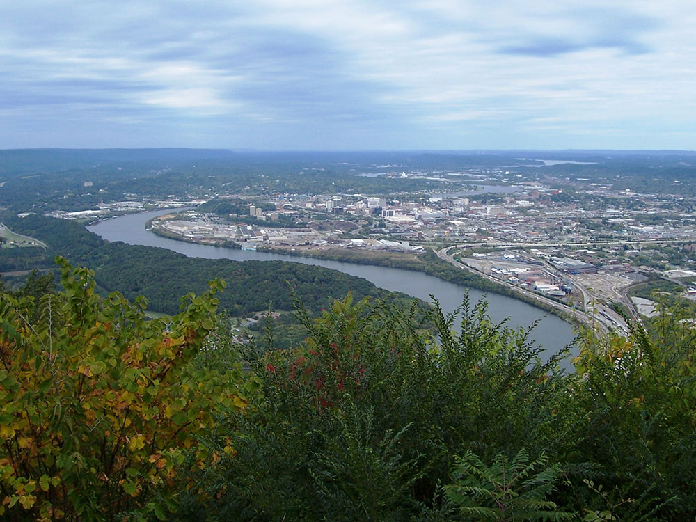
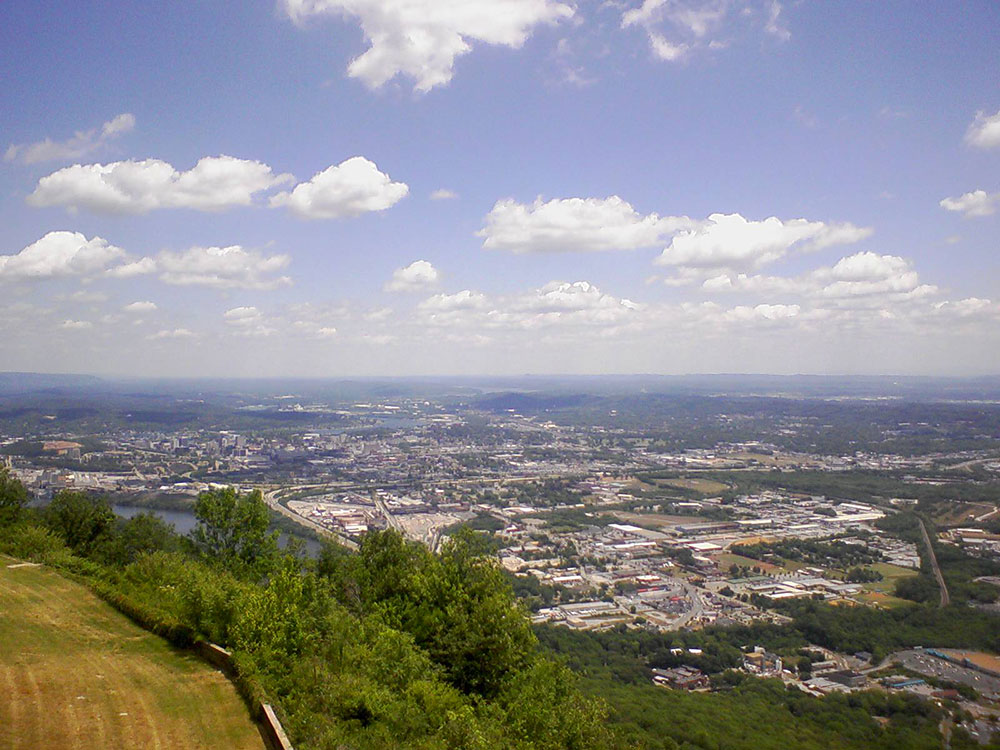

City along the Tennessee River bordering Georgia is Tennessee's fourth-largest city with a wide variety of entertainment, dining, cultural and architectural attractions
General Information
How to Get There
Overview
Chattanooga is a city in southeastern Tennessee on the Tennessee River, surrounded by mountains and ridges, and it is known for its natural beauty, its Civil War history, and its revitalized riverfront. Made famous by the 1941 song "Chattanooga Choo Choo," it is the home of the Tennessee Aquarium, Lookout Mountain, and the nation's first national military park. In recent decades, the city has been transformed from an industrial town into an outdoor-recreation and tech hub, with one of the fastest internet networks in the country.
Visitors come to Chattanooga for the Tennessee Aquarium, for Ruby Falls, an underground waterfall, and the Lookout Mountain Incline Railway. They also come for the Walnut Street Bridge, the Hunter Museum of American Art, and the Chickamauga and Chattanooga National Military Park, and for hiking, climbing, and paddling in the surrounding mountains and gorges.
History
The area was home to the Cherokee people, and John Ross, who became the principal chief of the Cherokee Nation, founded a trading post and landing here in 1816, and it was the starting point of the Trail of Tears in 1838. The city of Chattanooga was founded in 1839, and its location at a bend in the Tennessee River and the railroad made it a strategic prize in the Civil War. In November 1863, Union forces won the Battles for Chattanooga, including the "Battle Above the Clouds" on Lookout Mountain, which opened the way for Sherman's march to Atlanta. In the twentieth century, Chattanooga was a manufacturing city, and by the 1960s it was considered one of the most polluted in the country; a successful cleanup and revitalization since the 1980s has made it a model.
Sightseeing and Popular Landmarks
The Tennessee Aquarium on the riverfront has two buildings with freshwater and ocean exhibits, and the Walnut Street Bridge, built in 1891, is one of the longest pedestrian bridges in the world and links downtown to the North Shore. On Lookout Mountain, the Incline Railway, one of the steepest passenger railways in the world, takes visitors up the mountain, and Ruby Falls is a 145-foot waterfall inside a cave. Rock City has views of seven states, and the Chattanooga Choo Choo is a historic train station turned hotel.
Culture and Museums
The Hunter Museum of American Art sits on a bluff above the river and has a collection of American art, and the Chickamauga and Chattanooga National Military Park, established in 1890, preserves several battlefields, including Point Park on Lookout Mountain. The Creative Discovery Museum, the Houston Museum of Decorative Arts, the Tennessee Valley Railroad Museum, and the Chattanooga History Center are other museums, and the Tivoli Theatre and Songbirds Guitar Museum are popular for entertainment.
Parks
Chattanooga is known as an outdoor city, with hiking, rock climbing, and whitewater rafting nearby. Coolidge Park on the North Shore has a carousel and a riverfront playground, and Renaissance Park and the Tennessee Riverwalk offer trails along the water. Lookout Mountain, Signal Mountain, and Raccoon Mountain have trails, caves, and overlooks, and Prentice Cooper State Forest and the Tennessee River Gorge, the "Grand Canyon of Tennessee," are popular for hiking and paddling.
Seasons and Weather
Chattanooga has a humid subtropical climate. Summers are hot and humid, with highs in the upper 80s°F, and winters are mild, with highs in the 50s°F and a few inches of snow. Spring and fall are the best seasons, and fall color in the mountains is a highlight. Thunderstorms and tornadoes are possible in spring.
This article uses material from Wikipedia as well as information from official tourism and institutional sources. Key references include Chattanooga Tourism Co., Tennessee Aquarium, Ruby Falls, National Park Service Chickamauga and Chattanooga National Military Park, Hunter Museum of American Art, Tennessee Tourism, and National Weather Service Morristown. Wikipedia material is from the article "Chattanooga, Tennessee", and is available under the Creative Commons Attribution-Share-Alike License 3.0.
Featured Locations

Andrew Jameson, CC BY-SA 3.0, via Wikimedia Commons; Image Size Adjusted

Chattanooga Choo-Choo Hotel
Former railroad station once owned and operated by the Southern Railway is listed on the National Register of Historic Places, and the station is currently operated as a hotel

Gloria Bell from Philadelphia, CC BY 2.0, via Wikimedia Commons; Image Size Adjusted

Chickamauga and Chattanooga National Military Park
Park reserves the sites of two major battles of the American Civil War: the Battle of Chickamauga and the Siege of Chattanooga

Teke, CC BY-SA 3.0, via Wikimedia Commons; Image Size Adjusted

Hunter Museum of American Art
A riverside art museum featuring nearly 3,000 works spanning the colonial period to contemporary times, displayed across historic and modern gallery spaces overlooking dramatic river views.
Teke, CC BY-SA 3.0, via Wikimedia Commons; Image Size Adjusted
Lookout Mountain Incline Railway
Standard gauge inclined plane funicular railway leading to the top of Lookout Mountain which overlooks the city and the Tennessee River
Rock City Gardens
Attraction on Lookout Mountain in Georgia that features the High Falls of the Lookout Mountain, a waterfall 140 feet (43 m) high

Ronincmc, CC BY-SA 4.0, via Wikimedia Commons; Image Size Adjusted

Ruby Falls
Series of underground cascading waterfalls totaling 145 feet (44 m) in Lookout Mountain
Andrew Jameson, CC BY-SA 3.0, via Wikimedia Commons; Image Size Adjusted
Tennessee Aquarium
World-renowned freshwater and saltwater aquarium featuring immersive river and ocean habitats, diverse aquatic wildlife, interactive exhibits, and conservation-focused experiences.

Jeff P from Berkeley, CA, USA, CC BY 2.0, via Wikimedia Commons; Image Size Adjusted
.jpg){kind=link}
Walnut Street Bridge
2,376-foot-long bridge connects Chattanooga's downtown with North Chattanooga and now serves as a pedestrian walkway






